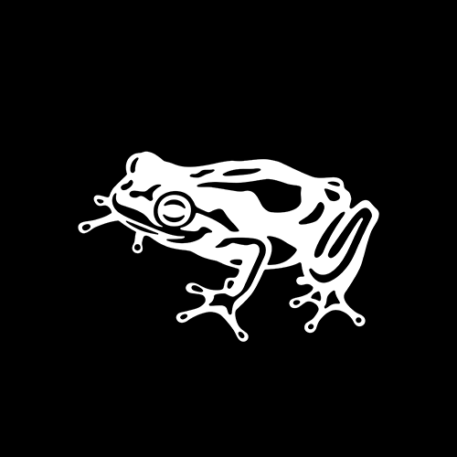

Tim van der Heide
As design technologist at frog Shanghai, Tim explores the possibilities that new technologies provide in both the design process as well as the products and services we develop. With an avid interest in the overlap between physical and digital products, his expertise features IoT development and rapid prototyping, so as to bring the digital and physical worlds together in meaningful ways.
As design technologist at frog Shanghai, Tim explores the possibilities that new technologies provide in both the design process as well as the products and services we develop. With an avid interest in the overlap between physical and digital products, his expertise features IoT development and rapid prototyping, so as to bring the digital and physical worlds together in meaningful ways.